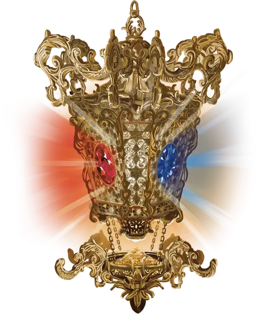

Чудесная лампада Дауда
Daoud’s Wondrous Lanthorn
Чудесный предмет, артефакт (требуется настройка)

Этот артефакт уничтожает сокровища для обеспечения света и защиты. У фонаря четыре стороны и он выкован из чистейшего желтого золота, а внутри него горит неугасимое янтарное пламя. На каждой его стороне находятся самоцветные линзы.
Фонарь — это символ учения Дауда, который когда-то был жрецом Истуса, бога судьбы. Когда Дауда лишили всего, чем он обладал, тот разработал новую радикальную философию в своем стремлении понять судьбу. Он призвал последователей своей идеологии отринуть блага и искоренять сокровища, без разделения на хорошие и плохие, чтобы распутать ткань судьбы.
Случайные свойства. Фонарь обладает несколькими свойствами, определяемыми случайным образом:
- 2 малых положительных свойства
- 1 основное положительное свойство
- 1 малое отрицательное свойство
Драгоценное топливо. Фонарь использует только один источник топлива: помещенные в его основание перетертые драгоценные камни. Он может вместить драгоценный порошок общей стоимостью до 10 000 зм, а при его нахождении он уже заправлен на 9 000 зм. После этого фонарь пытается сжечь топливо стоимостью 100 зм. после каждого прошедшего года, чтобы гореть еще год. Если топлива нет, то пламя фонаря гаснет. Вы можете добавить топлива в фонарь во время короткого или продолжительного отдыха. После добавления топливо нельзя убрать из основания артефакта.
Пламя фонаря нельзя погасить никаким способом, кроме ситуации, когда топливо заканчивается. Если оно гаснет, то настроенное на фонарь существо немедленно умирает. Из этого правила есть одно исключение (см. раздел «Уничтожение фонаря»).
Раскрывающий свет. Фонарь испускает яркий свет в пределах 60-ти футового радиуса и тусклый свет в пределах еще 60 футов. Невидимые существа и предметы становятся видимыми в области яркого света фонаря.
Пока вы настроены на фонарь, вы можете бонусным действием приглушить его, уменьшив освещение до тусклого света в пределах 5 футов, или снова сделать фонарь ярче, вернув освещение до яркого света.
Линзы. Когда фонарь найден, на его сторонах находятся самоцветные линзы следующих цветов: алмазная, изумрудная, рубиновая и сапфировая. Во время короткого или продолжительного отдыха вы можете магическим образом поменять любую из них, изменив цвет самоцвета, как указано в таблице «Линзы». Самоцветную линзу нельзя убрать из фонаря.
Держа фонарь в руке, действием вы можете сжечь часть топлива фонаря, чтобы наложить заклинание (Сл спасбросока 20) через одну или несколько его текущих самоцветных линз, как указано в таблице «Линзы». Цель или точка наложения заклинания должна находиться в области яркого света фонаря. Если топлива недостаточно для наложения заклинания, то все оставшееся полностью расходуется, после чего пламя гаснет.
| Цвет линзы | Заклинание | Стоимость топлива |
| Аметистовая | изменение тяготения [reverse gravity] | 3 000 зм |
| Алмазная | распад [disintegrate] | 2 000 зм |
| Изумрудная | ускорение [haste] | 500 зм |
| Гиацинтовая | небесный огонь [flame strike] | 1 000 зм |
| Рубиновая | удержание чудовища [hold monster] | 1 000 зм |
| Сапфировая | ужас [fear] | 500 зм |
| Топаз | замедление [slow] | 500 зм |
| Любые четыре цвета | радужная стена [prismatic wall] | 5 000 зм |
Уничтожение фонаря. Чтобы уничтожить фонарь, существо, настроенное на него, должно отказаться от всех материальных благ, кроме фонаря и обычной одежды. Затем оно должно добровольно погасить пламя фонаря с намерением уничтожить артефакт. Когда пламя погаснет таким образом, золото фонаря проржавеет, линзы и оставшееся топливо из драгоценных камней превратится в бесполезный песок, а настроенное на него существо не умрёт.